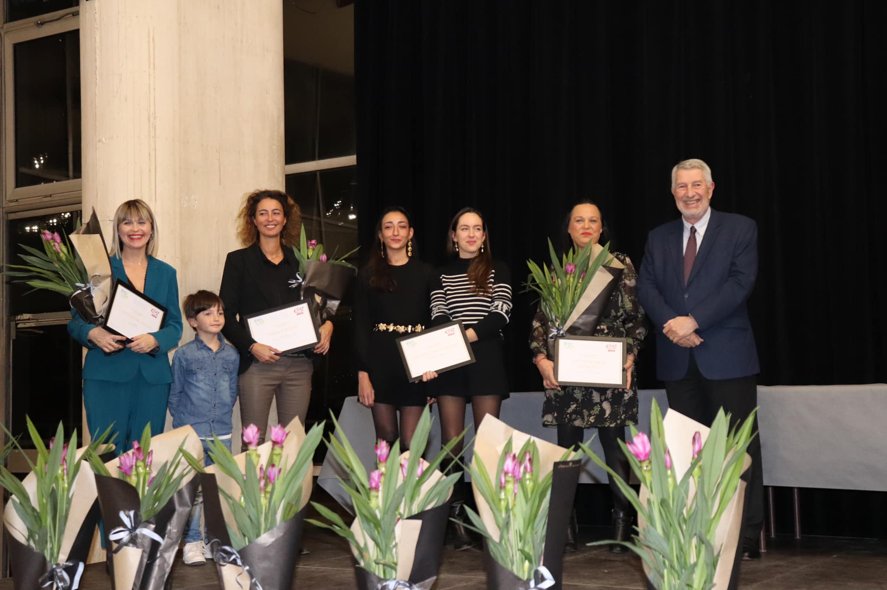

Mon parcours
À propos
Issue du monde juridique, c'est par passion pour les activités artistiques et manuelles que j'ai choisi de me reconvertir dans le domaine de la peinture en 2013. Ayant toujours eu l'envie d'exercer un métier concret, où l'on crée avec ses mains et où l'on peut voir le résultat de son travail prendre forme sous ses yeux, j'ai trouvé, à un moment de ma vie, le courage de franchir le pas et de suivre mes aspirations.
Aujourd'hui, j'exerce ce métier avec la même motivation qu'à mes débuts : transformer les lieux pour qu'ils retrouvent leur éclat, leur harmonie et leur personnalité.
Ce que j'aime le plus dans mon travail, c'est voir un intérieur reprendre vie. Une pièce sombre qui s'éclaire, un logement fatigué qui retrouve du caractère, un client qui redécouvre son propre intérieur avec plaisir.
Installée à Nogent-sur-Marne, j'interviens principalement dans l'Est parisien et à Paris auprès des particuliers et des professionnels.
Je travaille principalement seule, ce qui me permet d'assurer un suivi personnalisé. Pour les projets plus importants, je peux également m'appuyer sur un réseau de professionnels de confiance avec lesquels j'ai l'habitude de collaborer.
J'interviens aussi bien dans des appartements anciens que dans des intérieurs contemporains. Chaque projet est différent, et c'est précisément ce qui me plaît dans ce métier.
J'accorde une grande importance à la relation de confiance qui se construit tout au long d'un chantier. Écoute, conseils et communication font partie intégrante de ma façon de travailler, au même titre que la qualité des finitions.
Ce que disent souvent mes clients
Une relation fondée sur la confiance
Professionnelle, fiable, à l'écoute, de bon conseil et minutieuse.
Ce sont les qualités qui reviennent le plus souvent dans les avis laissés par mes clients et dans les recommandations qui me sont adressées.
Et c'est probablement la plus belle récompense de mon métier.
Membre du réseau Batifemmes
Votre projet
Parlons de votre intérieur
Je me déplace pour étudier votre projet, vous conseiller et établir un devis personnalisé.
Demander un devis